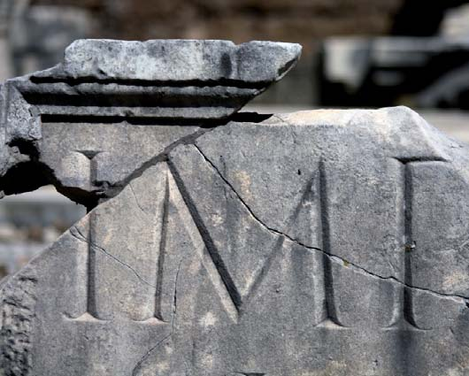

Una breve historia del libro
2. El libro en la antigüedad
2.1. Mesopotamia
La forma de libro más antigua que se conoce son las tablillas, consistentes en pequeñas placas de arcilla, madera, marfil, diferentes metales u otros materiales que servían de soporte a la escritura. Probablemente el primer libro de la historia fue creado en el seno de la civilización mesopotámica por los sumerios en el IV milenio a.C., y utilizado después durante tres mil años como método de conservación y transmisión de información por todo el Próximo Oriente.
La arcilla, muy abundante en toda la zona entre los ríos Éufrates y Tigris, se cortaba en pequeñas planchas de entre 2 y 3 cm. para las tablillas más pequeñas y hasta 30 cm. para las mayores. Se escribía por las dos caras sobre la arcilla húmeda y blanda, al principio con una caña afilada y más tarde con un estilete de madera o metal a modo de punzón, luego se dejaba secar al sol o en un horno. Debido a las características del instrumento con el que se escribía, romo y de sección triangular, y a los caracteres en forma de cuña que generaban en la arcilla, a esta escritura se la conoce como escritura cuneiforme.
También se emplearon otros materiales dependiendo de la importancia de los documentos. Los documentos más valiosos se grababan en piedra o metales (plomo, oro, etc.). Estos escritos se caracterizaban por su brevedad, su escasa circulación y la anonimia. Trataban preferentemente temas administrativos y económicos, aunque también conservaron textos épicos, jurídicos, religiosos, etc.
Las primeras acumulaciones de estas tablillas dieron lugar a las bibliotecas más antiguas. Las más famosas de esta época fueron las de Ebla y los templos de Babilonia y Nínive (S. VII a. C.).
2.2. Egipto
La cultura egipcia fue seguramente la primera en utilizar tintas y un soporte, el papiro, que comparte algunas características con el papel como: su ligereza, aspecto exterior, color, flexibilidad, capacidad de absorción, etc. La planta de la que se obtenía el papiro (Cyperus papyrus) era una planta acuática muy abundante en todo el territorio egipcio, crecía en los cursos de agua de África y Asia Menor, especialmente a orillas del Nilo. El tallo de esta planta se cortaba en tiras finas que se disponían en capas que se iban superponiendo, se secaban al sol y se pulían hasta formar una especie de tejido. Después se pegaban en largas fajas con las que se formaban los rollos o volúmenes. El papiro fue el material primitivo más empleado en el espacio y en el tiempo, fue el soporte esencial del libro en Egipto y su uso se difundió por todo el mediterráneo a través la cultura grecorromana.
Los instrumentos de escritura más utilizados entonces fueron primero juncos cortados al revés y luego la caña (calamos, canna, iuncus), que permitía una escritura más fina. La tinta se hacía mezclando minerales, carbón vegetal, agua y goma.
El libro egipcio puede considerarse la segunda forma de libro de la historia, y se corresponde con el rollo (rotulus) o volumen (volvere), ya que el papiro era un material muy flexible que permitía ser enrollado fácilmente alrededor de una varilla de madera o metal. En principio se escribía por una sola cara y para leerlo era preciso desenrollarlo, de modo que fuera descubriéndose sucesivamente el texto escrito.
Los rollos de papiro, por su apariencia exterior y su mayor capacidad para recoger documentos más extensos, por su fácil manejo y transporte, superaron rápidamente a las tablillas de arcilla mesopotámicas; sin embargo, ambos libros tenían algunas características comunes, como la brevedad o la anonimia.
La importancia de la religión en Egipto y la difusión del “Libro de los Muertos”, que constituía una auténtica guía de tránsito al Más Allá, supuso un extraordinario desarrollo de la escritura. Además, fueron descubiertos otros textos de carácter administrativo, jurídico, legislativo, científico, etc. Todos estos papiros se conservaban en vasijas de barro, cajas de madera, estuches de cuero, etc. o simplemente se acumulaban en archivos o bibliotecas situados en templos o palacios. En Egipto, como en Mesopotamia, la figura del escriba tenía un reconocimiento especial. El buen funcionamiento de la administración del Imperio reposaba en diferentes cargos ocupados por escribas pertenecientes a familias privilegiadas y, generalmente, descendientes de otros escribas. Eran educados en las casas de vida que estaban vinculadas a algún templo y, además de escribir y leer, aprendían derecho, historia, geografía, matemáticas, etc.
En la cultura egipcia también se emplearon otros materiales y soportes como tablas de madera recubiertas con yeso, piedra caliza, recipientes de arcilla, pieles, etc., aunque de forma más marginal. La utilización del rollo de papiro fue una de las aportaciones más importante de los egipcios a las culturas siguientes, especialmente por la propia forma material del libro, el empleo de la tinta y la inclusión de ilustraciones como complemento explicativo de los textos o simplemente como ornamento.
2.3. Grecia
La presencia del papiro en Grecia es tardía (hacia el siglo VII a.C.) y convivió con otros materiales como las tablillas de madera rehundidas y rellenas de cera o el pergamino. En el ámbito griego la materia más abundante era el pergamino, fabricado a partir de pieles curtidas de animales, las cuales eran más resistentes y fáciles de obtener que el papiro. Este soporte material para la escritura se conocía desde antiguo y se sabe que ya en siglo II a. C. Pérgamo era un importante centro de su producción, de ahí el origen de su nombre. El pergamino se fabricaba con la piel de distintos animales y dependiendo del animal tenía más o menos calidad. Así, la más utilizada era la de cabra, oveja, carnero, vaca y ternera, aunque también se usaba la de camello, cerdo, becerro e incluso la de asno y antílope. La piel más apreciada era la vitela, hecha de un animal más joven, que podía llegar a ser muy fina. El proceso de elaboración del pergamino era complejo y costoso, la piel del animal se sumergía en una disolución de cal que facilitaba la operación de despojarla del pelo, luego se procedía al raído con una cuchilla, se pulimentaba con piedra pómez y se encolaban los agujeros o grietas para obtener una superficie lisa.
Aunque la obtención del pergamino era cara por su escasez y por la mano de obra necesaria para el proceso de preparación, presentaba ciertas ventajas frente al papiro: se podía escribir por ambas caras, borrar lo escrito raspando y volver a escribir de nuevo (palimpsestos), era más resistente y manejable. Al principio el pergamino se utilizó en forma de rollo, pero como tenía poca flexibilidad, fue finalmente sustituido por el codex o códice en la época romana.
La consolidación del alfabeto griego facilitó la técnica de escribir y la hizo más asequible a un mayor número de personas. Por otra parte, el sistema social griego y su democracia permitían a cualquier ciudadano libre participar en el gobierno de la nación, siempre y cuando supiera leer y escribir, lo que propició la extensión de la enseñanza. El libro fue alcanzando una relevancia cada vez mayor. El contenido se diversifica, ya no sólo incluye textos burocráticos, sino también obras filosóficas, literarias, etc., además, las obras dejan de ser anónimas y se reconoce la figura del autor.
En cuanto a las bibliotecas, ha quedado constancia de la importancia de algunas de Egipto como la de Tebas, o las bibliotecas dependientes de templos en Karnak, Dendera, Tell-el-Amarna, etc., pero sin duda, la referencia más importante de la Antigüedad fue la biblioteca de Alejandría, fundada por Ptolomeo I (Sóter) cia el año 290 a. C. Entre sus fondos albergaba las obras de la literatura griega y contaba con traducciones al griego de obras egipcias, babilónicas y otras literaturas de la Antigüedad. Se cree que pudo llegar a albergar hasta 700.000 volúmenes. Se incendió parcialmente en el año 47 a. C., cuando el emperador romano Julio César tomó la ciudad. Sobre su total destrucción existen varias teorías y parece que desapareció definitivamente en el año 391 d. C., al ser destruido el Serapeion durante el imperio de Teodosio I. La otra gran biblioteca de la misma época fue la de Pérgamo, ampliada por Atalo I en el siglo II a. C. y enriquecida por su hijo Eumenes II. Ambos pretendían emular la grandeza de la de Alejandría. En Atenas, la primera biblioteca se abrió hacia el 330 a. C. y a partir del siglo III a. C. experimentaron un notable incremento tanto las bibliotecas públicas como las colecciones bibliográficas particulares como las de Platón, Jenofonte, Eurípides, Euclides, Aristóteles, etc.
2.4. Roma
Las fluidas relaciones comerciales entre Roma y los egipcios aseguraron la provisión de papiro en el mundo romano, aunque también se usaron otros materiales como las tablillas de madera, principalmente para anotaciones y para la enseñanza. Estas tablas se ahuecaban y cubrían de cera o yeso sobre el que se escribía con un estilete o un buril. En uno de los bordes de la tablilla solían hacerse dos agujeros por los que se pasaba un alambre o una cinta para sujetarlas, y se protegían con dos placas metálicas. Si se unían dos, tres o más, al conjunto se le llamaba respectivamente díptico, tríptico o políptico.
Al final del Imperio Romano se adopta definitivamente la tercera forma histórica del libro: el codex o códice. Inicialmente consistía en una derivación de las tablillas de madera usadas por los romanos. Entre éstas se fueron intercalando hojas de papiro y, posteriormente, de pergamino manteniendo su misma forma y dando lugar al denominado liber quadratus. Con el tiempo fue aumentando la proporción de papiro y pergamino, hasta que terminaron por confeccionarse casi exclusivamente en estos materiales. Luego, las hojas aparecían dobladas y agrupadas en forma cuadrada o rectangular, se cosían y al conjunto de ellas se añadían dos tapas de madera que se ataban con correas y servían de protección. De este modo, el códice fue adoptando la forma de los libros que hoy manejamos.
Aunque de una forma lenta, el rollo de papiro fue cayendo en desuso hasta que desaparece a comienzos del siglo V d. C. El códice de pergamino se impuso por una serie de ventajas: se podía consultar más fácilmente, podía contener más texto porque se podía escribir en ambas caras, era más fácil de transportar y almacenar, además, por su encuadernación, se conservaba mejor.
Roma fue la heredera de las tradiciones griega y etrusca, en cuanto al gusto por el libro y el conocimiento; no obstante, los romanos contribuyeron decisivamente a impulsar y difundir la producción y comercialización de los libros. El negocio editorial se fue desarrollando mediante el intercambio y la compraventa de libros. Se considera a Tito Pomponio Ático, escritor e historiador, como el primer editor romano, que se hizo célebre por editar las obras de sus amigos, entre ellos Cicerón. En la Roma Imperial se crearon las bibliotecas públicas, de titularidad estatal, a las que tenía acceso cualquier ciudadano. Cayo Asinio Polión fundó la primera biblioteca pública en el año 37 a.C., aunque la idea originariamente era de Julio César, primer estadista que propugnó estas instituciones. Las más importantes fueron las bibliotecas Octaviana y Palatina, creadas por Augusto, y la Ulpiana, construida en tiempos de Trajano, que fue la mayor de todas. Durante el desarrollo del cristianismo, en los últimos tiempos del Imperio Romano, también se crearon importantes bibliotecas cristianas, como las de Cesarea, Hipona, Antioquia, etc. En el Imperio Romano de Oriente, Constantino fundó una gran biblioteca en Bizancio en el 330 d. C., con obras de la literatura cristiana y otras obras consideradas paganas.